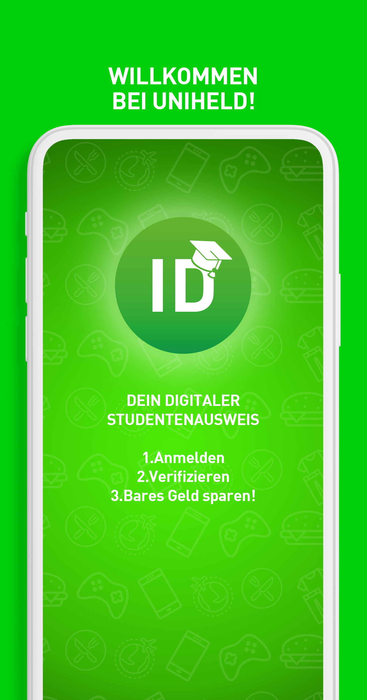
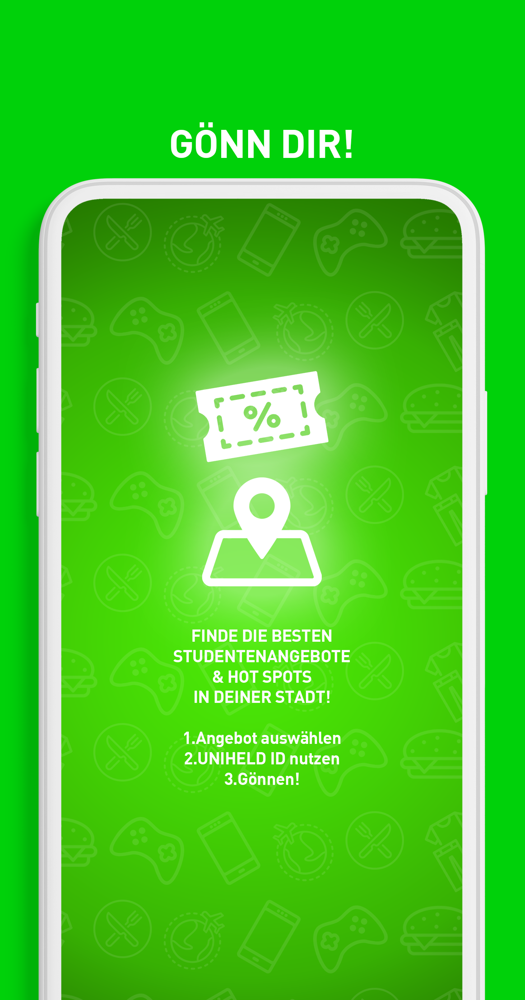
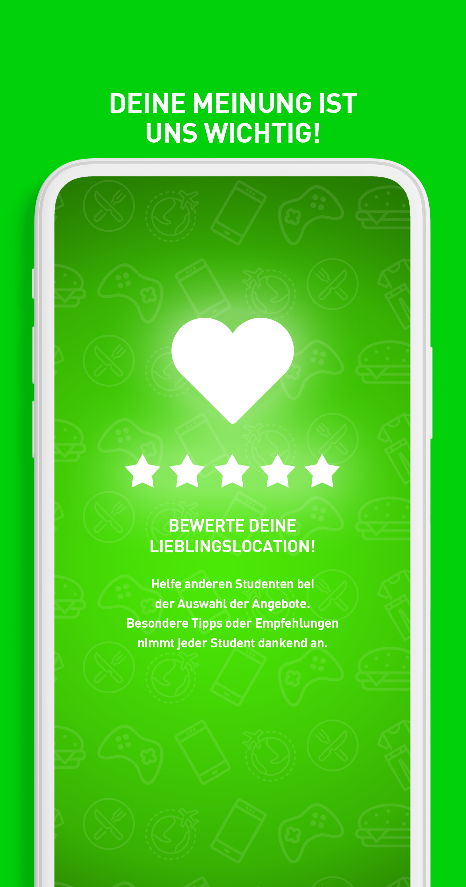

<ion-view view-title="Intro" class="intro">
       
<ion-nav-buttons side="left">
  <button class="button intro whiteColor"
          ng-click="startApp()" ng-show="!slideIndex">
    Überspringen
  </button>
   
  <button class="button intro whiteColor"
          ng-click="previous()" ng-show="slideIndex > 0">
    Zurück
  </button>   
</ion-nav-buttons>
    
       
     
<ion-nav-buttons side="right"> 
  <button class="button intro whiteColor"
          ng-click="next()" ng-show="slideIndex != 2">
    Weiter
  </button>
  <button class="button intro whiteColor"
          ng-click="startApp()" ng-show="slideIndex == 2">
    Starten!
  </button>

</ion-nav-buttons>
<ion-slide-box on-slide-changed="slideChanged(index)">
  <ion-slide>
    
  </ion-slide>
  <ion-slide>
    
  </ion-slide>
  <ion-slide>
      
  </ion-slide>
</ion-slide-box>
</ion-view>


